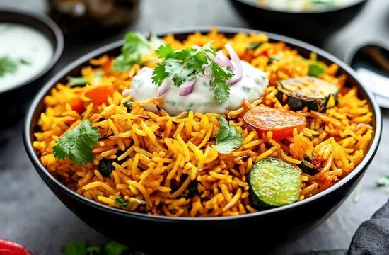
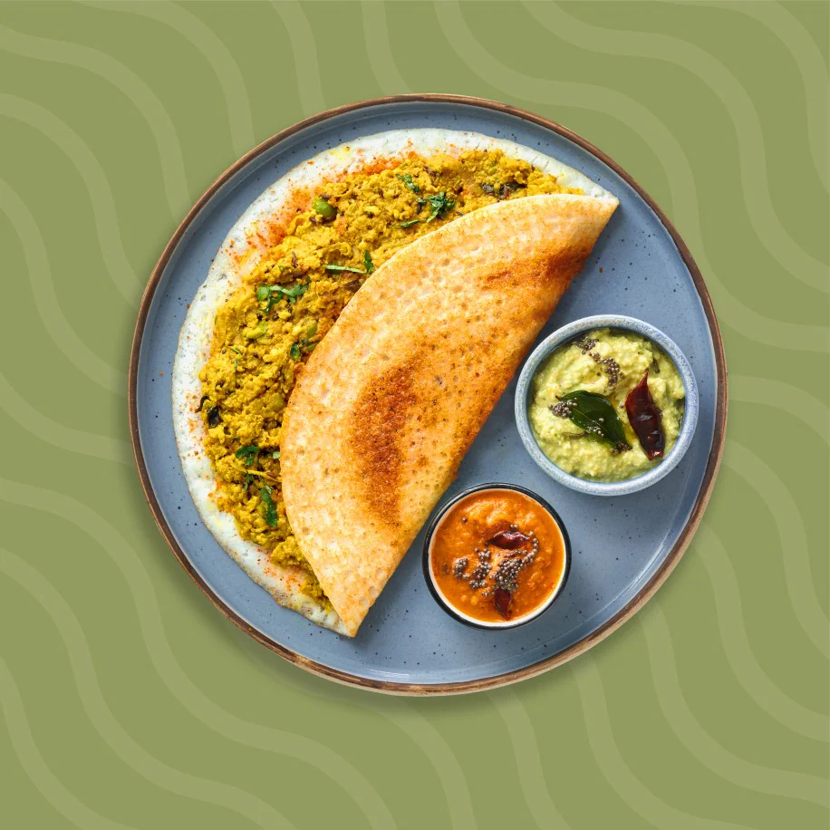
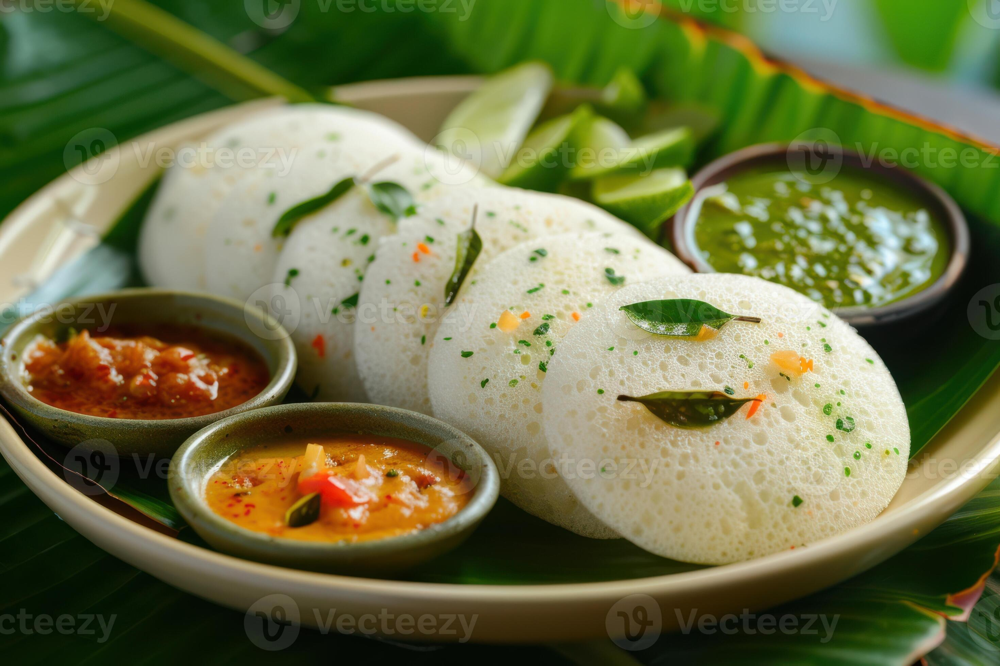
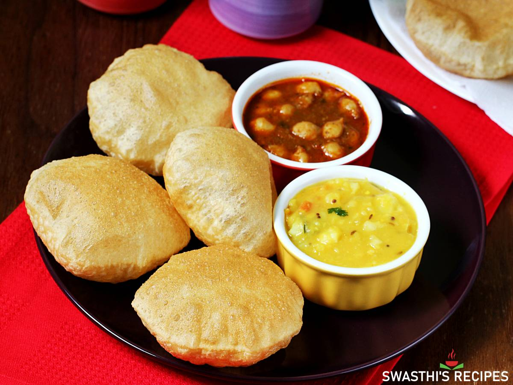

Chicken biryani is a fragrant, flavorful South Asian mixed rice dish that combines tender, spiced chicken with long-grain basmati rice. Prepared with rich aromatics—such as saffron, mint, and cardamom—the ingredients are layered and slow-cooked in a sealed pot to absorb maximum moisture and flavor.

Veg (vegetable) biryani is a fragrant, celebratory Indian rice dish loaded with a colorful medley of vegetables, aromatic spices, and basmati rice. Often slow-cooked using the traditional "dum" method, it combines tender vegetables with toasted whole spices, mint, and saffron-infused milk for a complex, flavorful feast.

Dosa is a staple South Indian crepe made from a fermented batter of rice and lentils. Known for its crisp texture and savory flavor, it is usually served hot with coconut chutney and piping hot sambar. It is a versatile, nutrient-rich dish enjoyed for breakfast, lunch, or dinner.

Idli is a beloved, traditional South Indian steamed cake made from a fermented batter of parboiled rice and black lentils

Poori is a beloved, unleavened deep-fried flatbread from the Indian subcontinent

A non-vegetarian full meal is a robust, multi-course feast featuring protein-rich meats, poultry, or seafood as the centerpiece

A vegetarian full meal is a nutrient-dense, plant-based feast that beautifully balances carbohydrates, healthy fats, and proteins